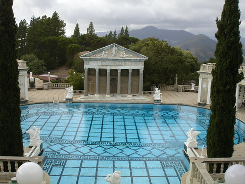

nancy's blog
Batopilas aquaduct

Along the way she swam in the Rio Batopilas river, panned for silver, meet a goat herder, and also a guide on a horse returning from a 3 day trip to Urique and back to Batopolis. Most stunning were the flowering cactus and trees found in this deep desert canyon.
View La Bufa in the bottom of Copper Canyon, Mexico

Here is a photo overlooking the road to La Bufa and eventually to Batopilas.
This area is the home to the famous Indians Traumara (Raramuri). One of the oldest people in North America, migrated to this area to avoid conflict with the Spanish Missionary. This shy group of people who live a subsistence life style can be recognized by their unique clothing and dark skin. The men wear a white loincloth, sandals, and an array of shirts and the women wear colorful layered blouses and skirts and large scarfs of multi designs.
It does appear the Traumara (Raramuri) have huge struggles with health, farming in this harsh climate though they have some of the most efficient farming methods known, and preservation of a culture that is in conflict with a monetary society.
The death rate for women giving birth is one in ten. The death rate amoungst children under 5 is 50 percent. Poverty amongst these people in this area is so rampant it touches everyone. read more here... lee mas aquí... »
Exhacienda Minera near Batopilas

Even today there are mining activities in the far mountains in Copper Canyon where new roads have been built giving people access to areas of this region where before only foot access was possible.

Camping at the rural police station

We stayed a police station last night. Evening came, and dark was nipping at our heels as we came to a intersection of two roads. The store and the gas station were the only thing around and they were both closed. The man with the little hot dog stand was closing up but had four hot dogs for sale which we gladly purchased and greedly wolfed down.
In the dark we noticed another building with a TV playing and a police car in front. We went to the door and knocked. We asked permission to camp there at the police station, a very safe place to stay.
Two of the policement asked if we needed anything.. I said yes - I would like two cans of beer. They went to the town many miles away 45 minutes later drove back with their lights flashing. The beer had arrived.
There are 5 guys who live at the station for a week to ten days, 24 hours a day. They make 100 dollars a month. Wow. read more here... lee mas aquí... »
Into Mexico

We are in Magdelena de Kino. We rode 68 miles yesterday through - from
Patagonia through the border crossings to Imuris, Sonora, Mexico. What wonderful folks.
All sorts of people giving us waves and friendly beep and calling out from
the side of the road. The Nogales border crossing from Mexico to the
United States was had a line of semi trucks three deep and miles long waiting
to get into the USA. We got so many waves and beeps and whistle it was
almost embarrassing but I still kind of enjoyed the attention.
As evening approached we got looking for a place to camp for the evening a
guardian angle appeared. This American from Tucson stopped by the edge of
the road to say hi and ended up escorting us to his house 20 miles away.
He drove in back of us with his lights blinking and flashing. Our private
support vehicle. Bill is truly an angel. read more here... lee mas aquí... »
Shakedown Ride: Still kicking around Tucson

Well, here we are again, on the road again. We arrived in Tucson on Thursday of last week and here we are on Tuesday still in Tucson but we are on the southern most part. We enjoyed a wonderful stay with Caroline and Mary in their beautiful home near Sombrero Point. The stay was useful as we got to get the last last kinks worked out of gears and backs. I had to go to the chiropractor to straighten out my back and to the dentist to check out the tooth from hell which I had pulled three days before we left Denver. The visit was also wonderful to share their home and friendship. And we got to watch the Super Bowl. Go Bears! read more here... lee mas aquí... »

Hearst Castle

From down on the Pacific highway looking up at the castle way way up on the hill, the castle looks like a Disney like icon but it is something total different when taking tour.
I was very lucky to get the last ticket of the last tour of the day. (mostly because I asked if all the sold out tickets has been picked up.)After waiting an hour I should up at 3:15 when the people on the waiting list got to buy tickets. I got the last available seat on the tour.
For those that do not know about W.R Hearst, he built an empire through publishing major Newspapers and Magazines :throughout the United States in the 1920 to 1950's. He had a dream when he was in his late 50's to build an amazing palace to house a full spectrum of art, sculptures, tapestries from all over the world that dated from around the 3rd century AD to the 21st century.
The famous movie Citizen Kane was based on Hearst's life and he attempted to quash it - with pretty significant success.